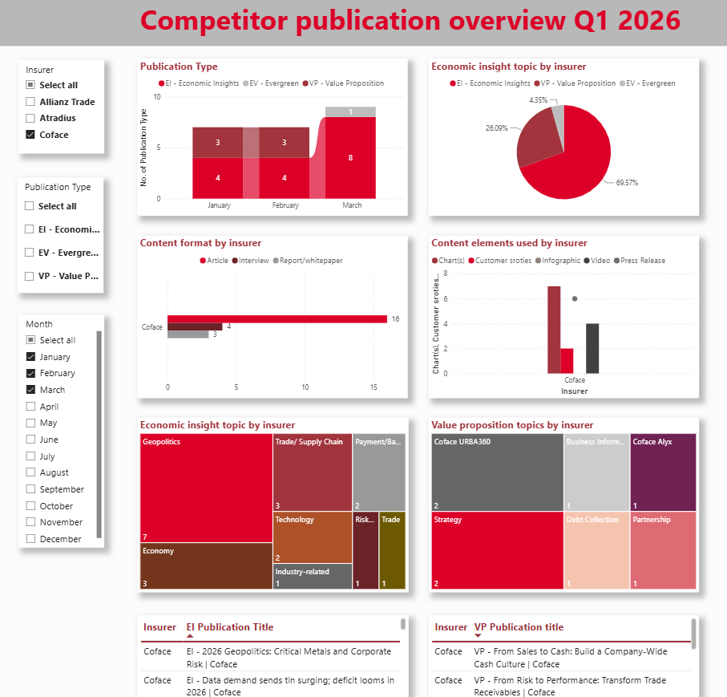
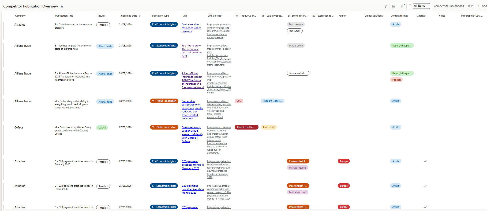
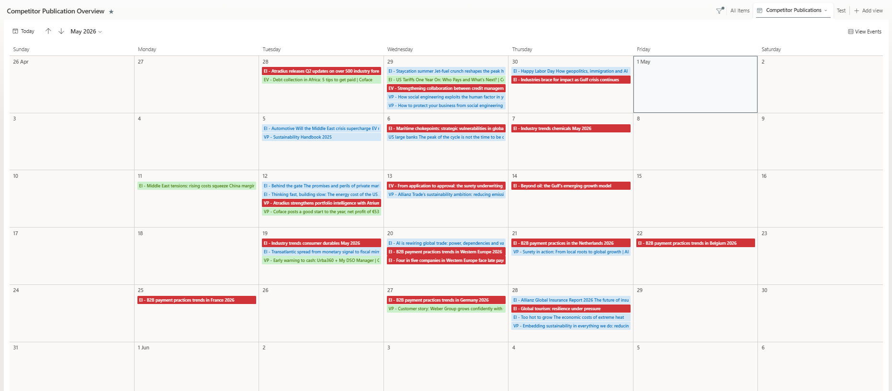
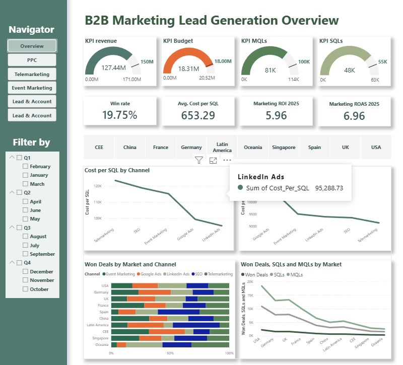
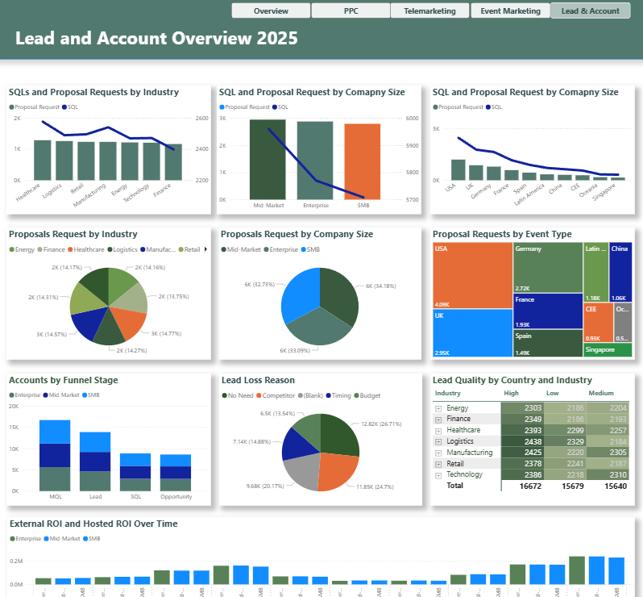
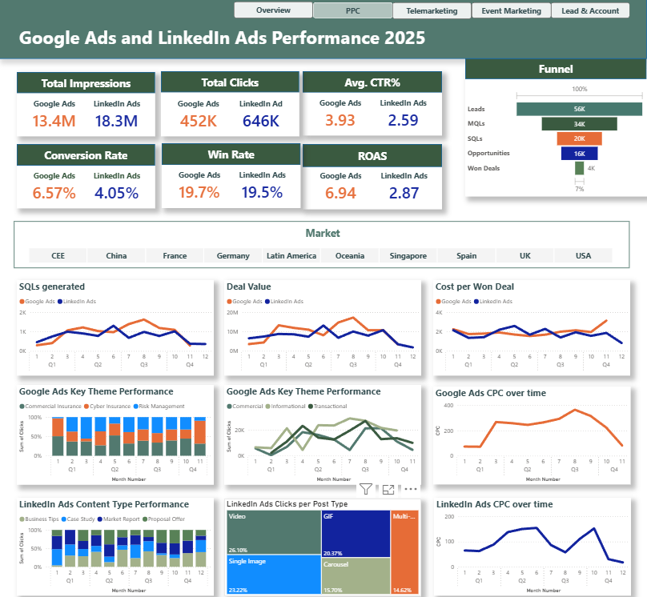

Every perspective reveals only part of a story.
For me, analysis is not only about finding answers. It is about asking better questions, exploring alternative perspectives, and connecting information in ways that reveal new possibilities.
Looking through a different lens often reveals assumptions, opportunities, and insights that might otherwise remain unseen.
What changes when we look at the same situation from a different angle?
Why was this choice made instead of another possibility?
What additional value can be created from information already available?
What processes, assumptions, and structures drive the outcome?
Question: What additional value could be created if competitor publications were analyzed not only as market information, but also as evidence of content strategy and thought leadership?



Impact:
By looking at competitor publications through a different lens, I transformed an existing information source into a new intelligence asset. What began as a personal initiative was later incorporated into quarterly reporting for Group Marketing & Communication, helping stakeholders track competitor content strategies, thought leadership focus, and market positioning over time.
The work was recognized by Pavel Gomez del Castillo (Head of Content) and presented to Dirk Hagener (Director of Group Marketing & Communication).
A self-initiated project translating business workflows into a structured analytical model.
Question: How can complex business workflows be translated into a data model that enables meaningful analysis, supports decision-making, and delivers valuable insights for stakeholders?



Automation, APIs, market intelligence workflows, data architecture, and decision-making processes.
kieutrinhdn99@gmail.com